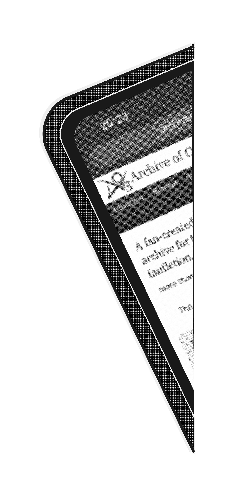
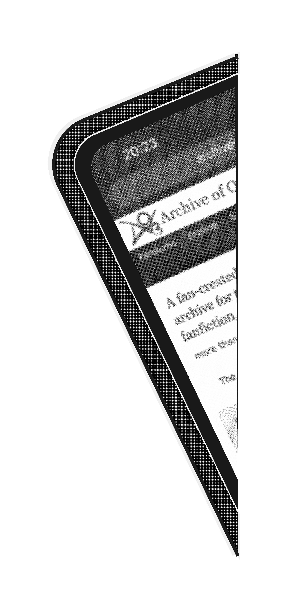

In the following sections, parasocial relationships are discussed with different lenses. The development, emotions evoked, and meaning of the relationships are examined with a general lens. An artistic lens is also used to focus on different artforms that are being created with these characters.
In the parasocial relationships section, these types of relationships are discussed. Parasocial relationships can provide connection while the audience sees another go through similar events as themselves. Emotions can be evoked while viewing the stories that the characters live in. These relationships can help with the forming of one’s identity. Romantic feelings can also
occur in these parasocial relationships and can be beneficial by helping the individual conceptualize a future romantic relationship. Videogames have a different type of parasocial relationship, as the audience plays more active role in the character’s storyline. Many different types of media have a fan following or a “fandom” in which members share artwork created with the characters and converse about the media as a whole.
In the art making and parasocial relationships section, there is examples of how art is created while using the characters as inspiration. Through fanart and fanfiction, the artist and/or author is allowed to use the character in their own creative venture. In cosplay, the audience members can become the character for a short amount of time while wearing a costume and doing performance art with other fans of the media.
 
